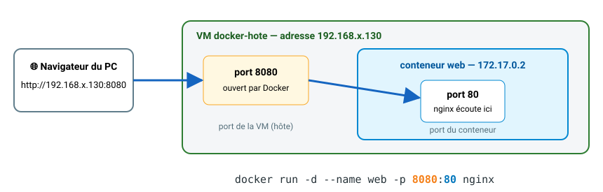
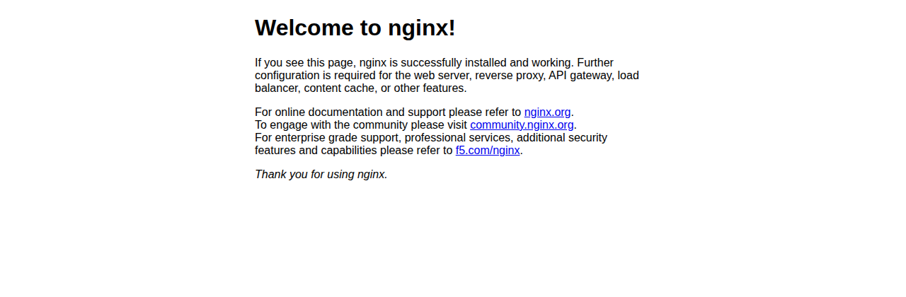
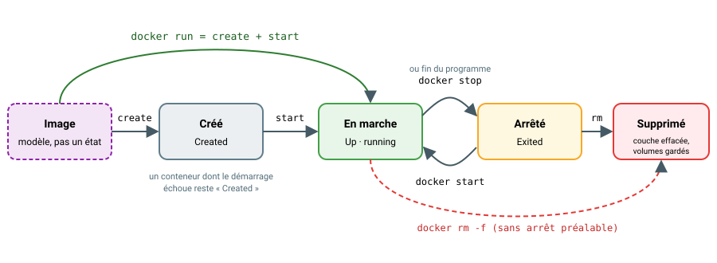

Premiers conteneurs¶
Résumé
On décortique d'abord ce qui s'est passé pendant le hello-world de la partie 1, puis on lance un vrai service : un serveur web nginx, joignable depuis le navigateur du PC grâce à la publication de port. On fait ensuite vivre ce conteneur : l'arrêter, le redémarrer, lire ses journaux, entrer dedans, le supprimer.
On termine par les images (d'où elles viennent, comment elles sont faites de couches, pourquoi préciser leur version) et par le ménage, pour ne pas remplir le disque de la VM. À la fin, toutes les commandes de base de Docker sont connues et ont été pratiquées.
| Propriété | Valeur |
|---|---|
| Difficulté | Débutant |
| Durée estimée | 2 h |
| Version décrite | Debian 13.7, Docker Engine 29.10, nginx 1.31 |
| Place dans le parcours | Partie 2 sur 17 du parcours Docker — jour 1 |
| Dernière mise à jour | 2026-11-24 |
Convention de lecture
🖥️ PC hôte · 🐧 VM docker-hote, connecté en adminlab · 📦 dans un conteneur · 🌐 navigateur du PC · ✍️ exercice. Point de départ : l'instantané 01-docker-installe. 🖥️ Démarrer la VM, puis s'y connecter en SSH : ssh adminlab@IP-de-la-VM.
1. Ce qui s'est passé pendant hello-world¶
🐧 Relancer le conteneur de test, en lisant cette fois le message en entier :
Hello from Docker!
This message shows that your installation appears to be working correctly.
To generate this message, Docker took the following steps:
1. The Docker client contacted the Docker daemon.
2. The Docker daemon pulled the "hello-world" image from the Docker Hub.
(amd64)
3. The Docker daemon created a new container from that image which runs the
executable that produces the output you are currently reading.
4. The Docker daemon streamed that output to the Docker client, which sent it
to your terminal.
Le message résume tout le fonctionnement de Docker en quatre étapes :
- le client (la commande
docker) a contacté le démon (le servicedockerd) à travers le socket/var/run/docker.sock; - le démon n'avait pas l'image
hello-world: il l'a téléchargée (pull) depuis Docker Hub, le registre public ; - il a créé un conteneur à partir de cette image et lancé le programme qu'elle contient ;
- il a renvoyé ce que le programme affichait vers le terminal.
Cette fois, la première ligne Unable to find image 'hello-world:latest' locally n'apparaît plus : l'image est déjà sur la VM, Docker la réutilise.
🐧 Lister les conteneurs en marche, puis tous les conteneurs :
CONTAINER ID IMAGE COMMAND CREATED STATUS PORTS NAMES
CONTAINER ID IMAGE COMMAND CREATED STATUS PORTS NAMES
1023f8e4aa98 hello-world "/hello" 1 second ago Exited (0) Less than a second ago kind_mestorf
Aucun conteneur ne tourne, mais le conteneur hello-world existe toujours (il y en a même un par docker run hello-world déjà tapé : la liste peut en montrer plusieurs), à l'état Exited (0) (terminé, code de retour 0 = sans erreur). Un conteneur vit aussi longtemps que son programme principal : hello-world affiche son message et se termine, donc le conteneur s'arrête aussitôt. Faute de nom choisi, Docker lui en a donné un au hasard (kind_mestorf).
2. Lancer un serveur web¶
2.1 docker run avec ses options¶
🐧 Lancer un serveur web nginx :
Unable to find image 'nginx:latest' locally
latest: Pulling from library/nginx
f5d03f5fad65: Pulling fs layer
37fb86c2a767: Pulling fs layer
...
37fb86c2a767: Pull complete
Digest: sha256:c35c59a6a083b2557aaf6e0740b2f4f9fe0e0226544e121498a67d2ec4d14ac9
Status: Downloaded newer image for nginx:latest
81a6e8ec8f61565865a85745c0fff93fcdc714cab7e68e5b93ae06e4ef5974f5
| Morceau de la commande | Rôle |
|---|---|
docker run |
Créer un conteneur à partir d'une image et le démarrer |
-d |
Mode détaché (detached) : le conteneur tourne en arrière-plan et rend la main au terminal |
--name web |
Donner un nom au conteneur, pour le désigner facilement ensuite |
-p 8080:80 |
Publier le port 80 du conteneur sur le port 8080 de la VM (voir plus bas) |
nginx |
Le nom de l'image à utiliser |
La longue suite de chiffres et de lettres affichée à la fin est l'identifiant complet du conteneur. Les lignes Pulling fs layer montrent que l'image est téléchargée en plusieurs morceaux, les couches : on y revient en section 5.
2.2 Le conteneur tourne¶
🐧 Vérifier :
CONTAINER ID IMAGE COMMAND CREATED STATUS PORTS NAMES
81a6e8ec8f61 nginx "/docker-entrypoint.…" 2 seconds ago Up Less than a second 0.0.0.0:8080->80/tcp, [::]:8080->80/tcp web
| Colonne | Signification |
|---|---|
CONTAINER ID |
Les 12 premiers caractères de l'identifiant ; ils suffisent pour désigner le conteneur |
IMAGE |
L'image d'origine |
COMMAND |
Le programme principal lancé dans le conteneur |
STATUS |
Up (en marche) depuis combien de temps, ou Exited (arrêté) |
PORTS |
Les ports publiés : 0.0.0.0:8080->80/tcp = le port 8080 de toutes les adresses IPv4 de la VM mène au port 80 du conteneur ; [::]:8080 = pareil en IPv6 |
NAMES |
Le nom du conteneur |
2.3 La publication de port¶
Un conteneur a sa propre adresse IP, sur un réseau privé que Docker crée à l'intérieur de la VM (172.17.0.0/16 par défaut). Le PC ne connaît pas ce réseau et ne peut pas le joindre. L'option -p 8080:80 demande à Docker de faire suivre tout ce qui arrive sur le port 8080 de la VM vers le port 80 du conteneur, comme une box Internet qui redirige un port vers un PC de la maison.

-p port-de-la-VM:port-du-conteneur : le premier nombre est dehors, le second dedans.
-
🐧 Tester depuis la VM elle-même :
-
🌐 Ouvrir
http://IP-de-la-VM:8080dans le navigateur du PC :
La page d'accueil de nginx, servie par le conteneur
webet vue depuis le PC.
Pourquoi 8080 et pas 80 ?
Rien n'empêche d'écrire -p 80:80. Mais un seul programme peut écouter sur un port donné d'une machine : si on lance dix serveurs web, chacun doit avoir son port sur la VM (8080, 8081, 8082…), même s'ils écoutent tous sur le port 80 dans leur conteneur. Au jour 3, un reverse proxy permettra de tous les joindre par le port 80, en les distinguant par leur nom.
3. Le cycle de vie d'un conteneur¶

Les états d'un conteneur et les commandes qui le font passer de l'un à l'autre.
-
🐧 Arrêter le conteneur, puis regarder les deux listes :
web CONTAINER ID IMAGE COMMAND CREATED STATUS PORTS NAMES CONTAINER ID IMAGE COMMAND CREATED STATUS PORTS NAMES 81a6e8ec8f61 nginx "/docker-entrypoint.…" 2 seconds ago Exited (0) Less than a second ago web 1023f8e4aa98 hello-world "/hello" 15 seconds ago Exited (0) 14 seconds ago kind_mestorfLe conteneur n'est plus dans
docker ps, mais il existe toujours (docker ps -a) : la page web ne répond plus, mais rien n'est perdu. -
🐧 Le relancer : il reprend avec la même configuration (même nom, même port publié).
-
🐧 Essayer de le supprimer pendant qu'il tourne :
Error response from daemon: cannot remove container "web": container is running: stop the container before removing or force removeDocker protège les conteneurs en marche. Il faut d'abord l'arrêter (
docker stop web, puisdocker rm web), ou forcer :docker rm -f webarrête et supprime en une fois. On le garde pour la suite.
Supprimer un conteneur, c'est perdre ce qu'il contient
Tout fichier créé ou modifié dans un conteneur disparaît avec lui au docker rm. L'image, elle, reste intacte : on peut recréer un conteneur neuf en une commande. Garder des données au-delà de la vie d'un conteneur, c'est le rôle des volumes, vus au jour 2.
4. Regarder ce qui se passe dans un conteneur¶
4.1 Les journaux¶
🐧 Afficher ce que le programme principal du conteneur a écrit :
/docker-entrypoint.sh: Configuration complete; ready for start up
172.17.0.1 - - [23/Nov/2026:23:10:45 +0000] "GET / HTTP/1.1" 200 896 "-" "curl/8.14.1" "-"
2026/11/23 23:10:45 [notice] 1#1: nginx/1.31.10
...
On y voit la requête faite tout à l'heure avec curl. Dans une image bien construite, l'application écrit ses journaux sur sa sortie standard plutôt que dans un fichier : Docker les récupère, et docker logs est le premier réflexe quand un conteneur ne fonctionne pas. L'option -f (follow) suit les journaux en direct, comme tail -f : docker logs -f web, puis Ctrl+C pour arrêter de suivre.
4.2 Exécuter une commande dans le conteneur¶
🐧 docker exec lance une commande dans un conteneur en marche :
🐧 Pour obtenir un terminal dans le conteneur, comme si on s'y connectait, il faut les options -i (garder l'entrée clavier ouverte) et -t (créer un terminal) :
📦 L'invite change : on est maintenant dans le conteneur, en root. Explorer un peu :
hostname # le nom de la machine… c'est l'identifiant du conteneur
cat /etc/os-release | head -2 # l'image nginx est construite sur Debian
ls /usr/share/nginx/html # les pages servies par nginx
exit # sortir du conteneur : il continue de tourner
cannot attach stdin to a TTY-enabled container because stdin is not a terminal
Ce message apparaît quand on utilise -it dans un script, ou à travers un outil qui n'est pas un vrai terminal. Dans ce cas, retirer -it et passer la commande directement : docker exec web cat /etc/os-release.
4.3 Inspecter et surveiller¶
🐧 docker inspect affiche toute la configuration d'un conteneur, en JSON (un format texte structuré). L'option --format (ou -f) en extrait une valeur :
docker inspect web --format '{{.NetworkSettings.Networks.bridge.IPAddress}} {{.State.Status}} {{.Config.Image}}'
🐧 Voir les processus du conteneur depuis la VM, et ce qu'il consomme :
UID PID PPID C STIME TTY TIME CMD
root 13632 13606 0 00:28 ? 00:00:00 nginx: master process nginx -g daemon off;
uuidd 13701 13632 0 00:28 ? 00:00:00 nginx: worker process
uuidd 13702 13632 0 00:28 ? 00:00:00 nginx: worker process
NAME CPU % MEM USAGE / LIMIT
web 0.00% 3.355MiB / 3.83GiB
Deux constats importants pour un administrateur :
- les processus du conteneur sont de simples processus de la VM, avec un numéro (PID) visible depuis la VM : on les retrouve dans
ps auxoutop. Un conteneur n'est pas une machine à part ; - les processus worker de nginx tournent sous l'utilisateur numéro 101 du conteneur (qui s'y appelle
nginx). La VM ne connaît pas ce nom :docker topaffiche donc le nom de son propre utilisateur 101, quel qu'il soit (iciuuidd; sur une autre installation, ce peut êtresshd,messagebus… ou simplement101). La commandegetent passwd 101montre qui c'est sur la VM. Les numéros d'utilisateur sont partagés entre le conteneur et la machine : c'est une raison de plus pour ne pas lancer n'importe quelle image enroot.
Un serveur nginx consomme ici 3 Mo de mémoire : c'est ce qui permet d'empiler autant de conteneurs sur un seul serveur.
5. Les images¶
5.1 Lister, télécharger, chercher¶
🐧 Télécharger deux images sans lancer de conteneur, puis lister les images présentes :
IMAGE ID DISK USAGE CONTENT SIZE EXTRA
alpine:latest f59abe656b69 13MB 3.94MB
debian:13 9c6e381421d0 187MB 52.6MB
hello-world:latest 1e4c05b897a7 25.9kB 9.49kB U
nginx:latest c35c59a6a083 255MB 69.8MB U
| Colonne | Signification |
|---|---|
IMAGE |
Le nom de l'image et, après les deux-points, son étiquette (tag), en général la version |
ID |
L'identifiant de l'image |
DISK USAGE |
La place occupée sur le disque de la VM, une fois l'image décompressée |
CONTENT SIZE |
La taille téléchargée (compressée) |
EXTRA |
U (in use) : au moins un conteneur, même arrêté, utilise cette image |
La différence de taille entre images est frappante : Alpine, une distribution Linux minimaliste, tient en 13 Mo ; Debian en 187 Mo. Les images « officielles » (nginx, httpd, mariadb…) proposent souvent une variante -alpine plus légère.
🐧 Chercher une image sur Docker Hub depuis le terminal :
NAME DESCRIPTION STARS OFFICIAL
debian Debian is a Linux distribution that's compos… 5329 [OK]
dockette/debian 🐳 Debian base images 3
...
Toutes les images ne se valent pas
N'importe qui peut publier une image sur Docker Hub. Préférer les images marquées [OK] dans la colonne OFFICIAL (maintenues par Docker et l'éditeur du logiciel) ou publiées par l'éditeur lui-même (par exemple portainer/portainer-ce). Une image inconnue peut contenir un logiciel vieux, mal configuré… ou malveillant.
5.2 Les étiquettes : toujours préciser la version¶
Sans étiquette, Docker utilise latest. nginx veut donc dire nginx:latest, c'est-à-dire « la version la plus récente au moment du téléchargement ». Deux serveurs qui téléchargent nginx à six mois d'écart n'ont donc pas la même version.
🐧 Comparer :
En production, on précise toujours la version (nginx:1.31, debian:13, mariadb:11.8) : on sait exactement ce qui tourne, et on choisit quand passer à la version suivante.
5.3 Une image est faite de couches¶
🐧 Afficher l'historique de fabrication de l'image nginx :
IMAGE CREATED CREATED BY SIZE COMMENT
c35c59a6a083 3 hours ago CMD ["nginx" "-g" "daemon off;"] 0B buildkit.dockerfile.v0
<missing> 3 hours ago STOPSIGNAL SIGQUIT 0B buildkit.dockerfile.v0
<missing> 3 hours ago EXPOSE map[80/tcp:{}] 0B buildkit.dockerfile.v0
<missing> 3 hours ago ENTRYPOINT ["/docker-entrypoint.sh"] 0B buildkit.dockerfile.v0
<missing> 3 hours ago COPY 30-tune-worker-processes.sh /docker-ent… 16.4kB buildkit.dockerfile.v0
...
Une image est un empilement de couches en lecture seule : une couche de base (ici une Debian minimale), puis une couche par étape de fabrication (installation de nginx, copie de fichiers…). Quand on lance un conteneur, Docker pose par-dessus une fine couche en écriture, propre à ce conteneur : c'est là que vont ses modifications, et c'est elle qui disparaît au docker rm.
Les couches sont partagées : dix conteneurs nginx n'occupent pas dix fois 255 Mo, mais une seule fois, plus leurs petites couches d'écriture. Et deux images bâties sur la même base ne la téléchargent qu'une fois (lignes Already exists pendant un pull). La fabrication des images, avec un Dockerfile, est le sujet de la partie 14.
6. Des conteneurs jetables¶
Un conteneur peut servir à exécuter une seule commande dans un autre système, sans rien installer sur la VM.
🐧 Ouvrir un terminal dans un conteneur Debian neuf :
📦 On est dans une Debian toute neuve, réduite au strict minimum :
hostname
ps aux # bash: ps: command not found : même ps n'est pas installé !
cat /etc/debian_version
exit
En quittant le terminal, on arrête bash, donc le programme principal du conteneur : le conteneur s'arrête, et l'option --rm le supprime aussitôt. docker ps -a ne le montre plus.
L'option --rm
--rm est idéale pour les essais et les commandes ponctuelles : pas de conteneur arrêté qui traîne. Elle est à éviter pour un service qu'on veut pouvoir redémarrer.
7. Faire le ménage¶
Conteneurs arrêtés et images inutilisées s'accumulent vite.
-
🐧 Supprimer le conteneur
webet tous les conteneurs arrêtés : -
🐧 Faire le bilan de la place occupée par Docker :
TYPE TOTAL ACTIVE SIZE RECLAIMABLE Images 4 0 454.6MB 454.5MB (99%) Containers 0 0 0B 0B Local Volumes 0 0 0B 0B Build Cache 0 0 0B 0BAucun conteneur n'existe plus, donc aucune image n'est « active » : la colonne
RECLAIMABLEindique qu'on pourrait récupérer presque toute la place. La partie 12 revient sur le nettoyage (docker system prune) et ses pièges. -
🐧 Supprimer une image dont on n'a plus besoin (impossible tant qu'un conteneur l'utilise, même arrêté) :
8. Exercices¶
✍️ Exercice 1 — Lancer un deuxième serveur nginx nommé web2, joignable depuis le navigateur du PC sur le port 8081 de la VM. Vérifier dans le navigateur.
Réponse
🌐 http://IP-de-la-VM:8081 affiche la page « Welcome to nginx! ». L'image étant déjà présente, le conteneur démarre instantanément, sans téléchargement.
✍️ Exercice 2 — Lancer un troisième conteneur nommé web3, encore sur le port 8081. Que se passe-t-il ? Dans quel état est web3 ensuite ?
Réponse
docker: Error response from daemon: failed to set up container networking: driver failed programming
external connectivity on endpoint web3 (…): Bind for 0.0.0.0:8081 failed: port is already allocated
Le port 8081 de la VM est déjà pris par web2. Le conteneur web3 a pourtant été créé : docker ps -a le montre à l'état Created, jamais démarré. Il faut le supprimer (docker rm web3) avant de réutiliser ce nom.
✍️ Exercice 3 — Lancer un serveur web Apache (image officielle httpd) nommé apache, sur le port 8082. Afficher sa page d'accueil avec curl, puis la version d'Apache qui tourne dans le conteneur.
Réponse
docker run -d --name apache -p 8082:80 httpd
curl -s http://localhost:8082
docker exec apache httpd -v
Pendant le téléchargement, certaines couches affichent Already exists : l'image httpd partage sa couche de base Debian avec l'image nginx, déjà présente.
✍️ Exercice 4 — Trouver l'adresse IP du conteneur web2 dans le réseau de Docker. Pourquoi ne peut-on pas l'utiliser depuis le PC ?
Réponse
(le dernier nombre dépend de l'ordre de démarrage des conteneurs : Docker donne la première adresse libre). Ce réseau 172.17.0.0/16 n'existe qu'à l'intérieur de la VM : le PC n'a aucune route vers lui. Depuis l'extérieur, on passe toujours par un port publié de la VM.
✍️ Exercice 5 — Faire le ménage : supprimer web2, web3 (resté à l'état Created après l'exercice 2, s'il n'a pas déjà été supprimé) et apache, puis l'image httpd.
Réponse
Un conteneur déjà supprimé donne Error response from daemon: No such container, sans gêner la suppression des autres.
L'ordre compte : tant qu'un conteneur (même arrêté) utilise l'image httpd, Docker refuse de la supprimer.
9. Vérifier son lab¶
Vérifier son lab
🐧 En adminlab :
docker run -d --name controle -p 8080:80 nginx
curl -s http://localhost:8080 | grep title
docker ps --format '{{.Names}} {{.Status}} {{.Ports}}'
docker rm -f controle
Résultat attendu :
<title>Welcome to nginx!</title>
controle Up 1 second 0.0.0.0:8080->80/tcp, [::]:8080->80/tcp
controle
🌐 Pendant que controle tourne, http://IP-de-la-VM:8080 doit aussi afficher la page de nginx depuis le PC. Si la page s'affiche dans la VM mais pas sur le PC, l'adresse utilisée n'est pas la bonne : sur VirtualBox, c'est celle de la seconde carte (192.168.56.x).
10. Questions de révision¶
- Quelle est la différence entre
docker psetdocker ps -a? - Que signifie
-p 8080:80? Lequel des deux nombres est le port de la VM ? - Pourquoi le conteneur
hello-worlds'arrête-t-il tout seul, alors que le conteneurwebcontinue de tourner ? - Quelle est la différence entre une image et un conteneur ? Que devient l'image quand on supprime le conteneur ?
- Quelle commande donne en premier des indices quand un conteneur ne démarre pas ou se comporte mal ?
- Pourquoi vaut-il mieux écrire
debian:13quedebiandans une commande ou un fichier de production ?
Corrigé
docker psne liste que les conteneurs en marche ;docker ps -a(all) liste tous les conteneurs, y compris arrêtés (Exited) ou jamais démarrés (Created).- Le port 8080 de la VM est redirigé vers le port 80 du conteneur. Le premier nombre est toujours le port de l'hôte (dehors), le second celui du conteneur (dedans).
- Un conteneur vit aussi longtemps que son programme principal. Le programme de
hello-worldaffiche un message et se termine ; nginx, lui, est un serveur qui attend des requêtes indéfiniment. - L'image est un modèle en lecture seule ; le conteneur est une image qui tourne, avec une couche en écriture par-dessus. Supprimer le conteneur supprime cette couche (et donc les fichiers modifiés dedans) ; l'image reste intacte et peut resservir.
docker logs <conteneur>: il affiche ce que le programme principal a écrit, y compris ses messages d'erreur.- Sans étiquette, Docker prend
latest, qui change au fil des publications : la même commande peut installer une autre version demain. Avecdebian:13, on sait exactement quelle version tourne et on choisit quand changer.
Ressources¶
- Docker — Référence de
docker run— toutes les options de la commande (en anglais). - Docker — Publier des ports — la publication de port en détail.
- Docker — Images et couches — comment une image est construite en couches.
- Image officielle nginx sur Docker Hub — les étiquettes disponibles et la documentation de l'image.
- Partie précédente : Découvrir Docker et l'installer · Partie suivante : Un serveur web et SSH dans un conteneur Debian.